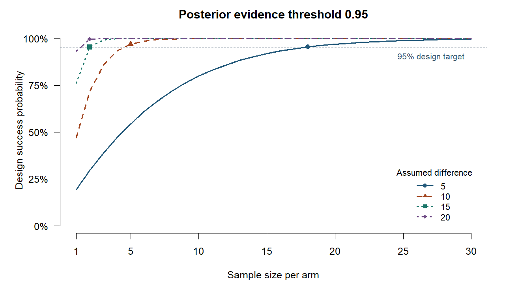

First, define what success means
I planned a hypothetical comparison of a new LDL-lowering treatment against an active comparator. The outcome was normally distributed with a known standard deviation of 4.5 in each arm. A positive difference favored the new treatment. I used a diffuse normal prior for that difference, centered at zero with standard deviation 100.
After seeing the data
Call the trial a success if the posterior probability of a positive treatment effect is greater than 95%. I also tried a stricter 97.5% cutoff.
Before running the trial
For each assumed true difference, find the smallest sample size that would meet the posterior rule in at least 95% of repeated trials. This design target stays fixed when the posterior cutoff changes.
What changes the sample size?


| Assumed difference | 95% posterior | 97.5% posterior |
|---|---|---|
| 5 | 18 | 22 |
| 10 | 5 | 6 |
| 15 | 2 | 3 |
| 20 | 2 | 2 |
Differences are in LDL units. Both columns use the same 95% design target. Whole-number sample sizes can tie even when one evidence cutoff is stricter.
I converted the posterior rule into a cutoff on the observed difference. The assumed normal sampling distribution gives the exact chance of crossing that cutoff at each sample size. These probabilities condition on a specified true effect. The code has a separate assurance calculation that averages over a design prior for the true effect.
Check the calculation two ways
- Simulate repeated trials
- With a fixed seed, I drew 100,000 trial-level estimates for each assumed difference at its selected sample size under the 95% posterior cutoff. For a true difference of 5, the exact success probability was 95.432% and 95.455% of the simulated estimates cleared the rule. All simulation checks
- Match the frequentist cutoff
- I paired the 95% and 97.5% posterior cutoffs with one-sided normal tests at α = 0.05 and 0.025, both with 95% power. With known variance and a diffuse prior, the cutoffs on the observed difference were close. The two calculations returned the same integer sample sizes for these scenarios. Both calculations
Why some values are so small
The larger assumed differences are large relative to an SD of 4.5. The model treats that SD as known and includes no dropout allowance or practical minimum. The small values illustrate the consequences of those assumptions and should stay within this hypothetical example.
The original course report described an 80% planning target while the executable code used 95%. The portfolio revision states the 95% target explicitly, matches the decision cutoffs and checks exact probabilities by simulation. Revision history
Code and reproducibility
Run Rscript analysis.R results from the repository with base R. All inputs are hypothetical parameters in the script.
R analysis · Methods and interpretation · Inputs · Saved results